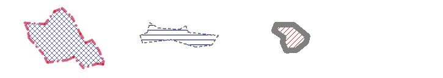

|
|||||||||||
| PREV CLASS NEXT CLASS | FRAMES NO FRAMES | ||||||||||
| SUMMARY: NESTED | FIELD | CONSTR | METHOD | DETAIL: FIELD | CONSTR | METHOD | ||||||||||
java.lang.Object
|
+--com.esri.mo2.map.draw.BaseSymbol
|
+--com.esri.mo2.map.draw.SimpleLineSymbol
|
+--com.esri.mo2.map.draw.SimplePolygonSymbol
The SimplePolygonSymbol allows to fill the polygon features with(or without) boundary.
The symbol supports next attrites:
Antialiasing can be true or false, default is false.
Transparency is transparency from 0.0 to 1.0, default is 1.0
Stroke allows to set the type of the boundary, default is solid, width 1 pixel.
Paint allows to set the filling object, default is solid white color. Boundary can be true or false, default if true.
There is example:
SimplePolygonSymbol spSymbol = new SimplePolygonSymbol();

spSymbol.setTransparency(0.6);
spSymbol.setAntialiasing(true);
spSymbol.setPaint(AoFillStyle.getPaint(AoFillStyle.TRANSPARENT_FILL, null));
Paint,
Stroke| Field Summary | |
boolean |
_transparencyFromAXL
This member is used internally for XML serialization. |
| Fields inherited from class com.esri.mo2.map.draw.SimpleLineSymbol |
_color, _composite, _dimensionSymbol, _stroke, DEFAULT_COLOR, DEFAULT_OVERLAP, DEFAULT_TYPE |
| Fields inherited from class com.esri.mo2.map.draw.BaseSymbol |
DEFAULT_ANTIALIASING, DEFAULT_TRANSPARENCY |
| Constructor Summary | |
SimplePolygonSymbol()
|
|
| Method Summary | |
void |
draw(FeatureGeometry g,
Graphics2D g2,
Object values)
This method draws the symbol in graphics context. |
boolean |
getBoundary()
Obtains the value of boundary. |
double |
getFillInterval()
Deprecated. use getPaint method |
double |
getFillTransparency()
Obtains the FillTransparency value. |
String |
getGeneralTransparency()
This method is used internally for XML serialization. |
Dimension |
getMaximumSymbolSize()
The method returns a Dimension of the symbol. |
Paint |
getPaint()
Obtains the paint object used for filling the polygon. |
boolean |
hasTransparency()
This method additionally checks the FillTransparency property |
void |
setBoundary(boolean boundary)
Sets the boundary value. |
void |
setFillInterval(double fillinterval)
Deprecated. use setPaint method |
void |
setFillTransparency(double transparency)
Sets the FillTransparency value. |
void |
setPaint(Paint p)
Sets the paint object used for filling the polygon. |
void |
setStroke(Stroke stroke)
Sets the Stroke object. |
| Methods inherited from class com.esri.mo2.map.draw.SimpleLineSymbol |
getComposite, getLineColor, getStroke, setComposite, setLineColor |
| Methods inherited from class com.esri.mo2.map.draw.BaseSymbol |
CalcCentroid, clone, filterShadowImage, filterTransparentImage, getAntialiasing, getFieldCount, getFieldName, getRenderer, getTransparency, setAntialiasing, setRenderer, setTransparency, switchTransform |
| Methods inherited from class java.lang.Object |
equals, finalize, getClass, hashCode, notify, notifyAll, toString, wait, wait, wait |
| Field Detail |
public boolean _transparencyFromAXL
| Constructor Detail |
public SimplePolygonSymbol()
| Method Detail |
public void draw(FeatureGeometry g,
Graphics2D g2,
Object values)
draw in interface Symboldraw in class SimpleLineSymbolg - the Geometryg2 - the graphics context for renderingvalues - the values of attribute fields, null == is ok and means no field valuesSymbol.draw(com.esri.mo2.cs.geom.FeatureGeometry, java.awt.Graphics2D, java.lang.Object)public void setPaint(Paint p)
p - Paint objectAoFillStylepublic Paint getPaint()
AoFillStylepublic void setFillTransparency(double transparency)
transparency - is a possible value 0.0 - 1.0BaseSymbol.setTransparency(double)public double getFillTransparency()
BaseSymbol.getTransparency()public boolean hasTransparency()
hasTransparency in interface SymbolhasTransparency in class BaseSymbolpublic void setFillInterval(double fillinterval)
fillinterval - is the FillInterval valuepublic double getFillInterval()
public void setStroke(Stroke stroke)
setStroke in class SimpleLineSymbolstroke - is the Stroke objectStrokepublic Dimension getMaximumSymbolSize()
getMaximumSymbolSize in class SimpleLineSymbolRenderer.getMaximumSymbolSize()public void setBoundary(boolean boundary)
boundary - is the value of boundary
Note: this property is currently not supported.public boolean getBoundary()
setBoundary(boolean)public String getGeneralTransparency()
|
|||||||||||
| PREV CLASS NEXT CLASS | FRAMES NO FRAMES | ||||||||||
| SUMMARY: NESTED | FIELD | CONSTR | METHOD | DETAIL: FIELD | CONSTR | METHOD | ||||||||||